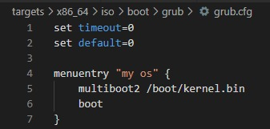

Required Softwares:
Commands Used:
- To build image: docker build buildenv -t myos-buildenv
- To enter the built image: docker run --rm -it -v "%cd%":/root/env myos-buildenv
- To build the x86-64 system: make build-x86_64
- To exit image: exit
- To run commands in 64-bit OS: qemu-system-x86_64 -cdrom dist/x86_64/kernel.iso
File Hierarchy
- Makefile
- buildenv
- Dockerfile
- src
- impl
- x86_64
- boot
- main.asm
- header.asm
-
targets
-
x86_64
- linker.ld
-
iso
- .gitignore
-
boot
-
grub
- grub.cfg
- Dockerfile
- impl
- x86_64
- boot
- main.asm
- header.asm
- boot
- x86_64
-
x86_64
- linker.ld
-
iso
- .gitignore
-
boot
-
grub
- grub.cfg
-
grub
Explanation:
Step 1 : Docker File
First, I made a folder named buildenv and created a new Docker File inside it. In this file by coding, I created an image of a linux operating system on my PC without actually having to install and configure Linux. In this docker file we install all requisites for running assembly on our PC and tell the docker desktop app in which directory on our PC to create the linux image. After saving this file, I ran command 1 from the commands section and after it has completed running, which took 15 minutes on my PC, I ran command 2 in the terminal. At the end of this a new linux environment will have been created and we will be inside it by help of command 2.
Step 2 : Assembly files 1 - header.asm
Creating a new folder called src, more folders and files were made following the hierarcy: src/impl/x86_64/boot/header.asm. The code below is the code in this file. This file acts as a bootloader and allows appropriate locating of OS. This is a multiboot2 specification. There are 4 data variables defined in this .asm file. One is to signify multiboot2 as a loader, one is to signify that we are working in protected memory mode, one to show length of header and one data variable for the sum of all other variables in the file. We also create a label multibootloader in this file, which is used to locate and enter the OS later on.
Step 3 : Assembly files 2 - main.asm
This file acts as our link for entering the 64-bit Operating System. In the same direcoty as the header.asm file, this main.asm file was created, with the code given below. I printed 'OK' on the console using this file. We move the number which represents 'OK' in the screen frame in this file, along with stating which OS version we are using, using the bits command.
Step 4 : Linker File - linker.ld
After creating a new folder called targets and making more folders and files following the hierarcy: targets/x86_64/linker.ld, the code given below was used in this file. As the name implies, this file tells the computer how to link the OS together. We enter the OS from this linker file, using the multibook section header we used in our header.asm file. This is a multiboot2 specification.
Step 5 : Configuration file - grub.cfg
Creating a folder named iso in the same directory as the linker file. Following the given directories and creating 2 more files, targets/x86_64/iso/.gitignore and targets/x86_64/iso/boot/grub/grub.cfg files in the folders. The code is given below. In this file, we name our OS and specify where we can find this OS, to be able to boot. This OS is in the kernel.bin file inside the boot folder. We also specify which type of loader is used in this file.

Step 6 : Makefile
Create a Makefile in the same directory as the buildenv folder we made in the start. Copy the code below in the Makefile.
Step 7 : Building and Emulating
After saving the Makefile, run command 3 to build the x86_64 system. After bulding, exit this system using exit(command 4). Then after making sure Qemu is running and the qemu path has been added to the path variables , run command 5 to emulate the OS and the commands we have just written.